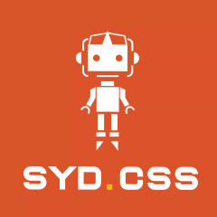

SydCSS 2015
Speaker 1 - James Coleman - Macropod
Reasons to change
- SASS
- Segmentation faults
- Extraneous functions
- Nesting
Modularity
- No independent variables
Variables
- Everything is global
Fixes
- Inline CSS (Radium) - hard to debug where inline styles are created
- PostCSS SASS Polyfill - hybrid between CSS and SCSS with less compatability
- CSS Modules - locally scoped class names - compiled with file location specifity
- Composition
.link{ ... }
.bookmarkLink{ imports from .link }
Speaker 2 - Vitaly Friedman - Smashing Magazine
eCommerce Design Patterns
Checkout UX
68.53% cart abandonment
- Additional costs
- Forced account creation
- Credit card trust
- Complicated checkout process
- Payment methods
Ways to improve
- Estimate shipping costs early on (before payment info)
- Ask for shipping location and currency
- Selecting shipping methods - show price and timing - missing info leads to abandonment
- Show inventory levels
- A few bad ratings validate lots of good ratings
- Asking for coupon codes - people search for one, people abandon if they can’t find one. Hide the coupon entry
- Unique selling points so people come back here
- Free shipping with minimum threshold (39% buy more to get free shipping)
- Expiring discounts
- Best price guarantee
- Simple returns
- Free stuff
Speaker 3 - Julia Mitchelmore
UX4FED
UX
Test > Research > Prototype > Repeat
Research
- Survey
- Personas -> Primary, secondary, example users
- User Journey -> Flow through the website, highlight key tasks
- Information Architecture -> Site structure
Prototype
- Wireframes
- Paper Prototypes -> Sketch, designs -> touchable
- Lookback -> See the user use the app
Heuristics
- Visibility of system status
- Flexibility of efficiency of use
- Aesthetics and minimalist design
- Help users recognise, diagnose and recover from errors
- Help and documentation
Speaker 4 - Chris - Canva
Animations, Easter eggs, and sneaky DOM manipulation
Cursor Trails - two images, stacked. Mask active image and draw on HTML5 canvas and overlay. Canvas render "Destination In". More and Close - animation while loading additional content and draw attention to the close button